OpenEMR 4.0 Users Guide
For a PDF version of the guide click HERE
Table of Contents
- Getting Started pg 3
- Getting to the Login Page pg 3
- Logging In pg 3
- Changing Passwords pg 4
- Main Screen & Navigation pg 5
- Navigation pg 5
- Traditional pg 5
- Tree View pg 6
- Radio Buttons pg 7
- Setting Up Your Clinic pg 8
- Facility Administration pg 8
- User Administration pg 9
- Practice Administration pg 11
- Lists pg 15
- Address Book pg 17
- Adding a New Patient pg 20
- Patient Demographics pg 20
- Patient History pg 23
- Uploading Documents pg 24
- Using the Calendar pg 27
- Setting Up Schedules pg 27
- Making Appointments pg 30
- Appointment Status pg 33
- New Encounters & Coding pg 35
- Opening a New Encounter pg 36
- Encounter Forms pg 38
- Using the Fee Sheet pg 40
- Adding Prescriptions pg 44
- Issues & Immunizations pg 47
- Adding Issues pg 47
- Associating Issues with Encounters pg 50
- Immunizations pg 52
- Patient Notes & Transactions pg 54
- Patient Notes pg 54
- Transactions pg 57
- Referrals pg 57
- Basic Transactions pg 59
- Basic Billing pg 61
- Billing Reports pg 62
- Generating Claims pg 63
- Generating HCFA Forms pg 66
- Accounting & Receivables pg 69
- Explanation of Benefits pg 69
- Entering Payments pg 70
- Patient Invoices and Payments pg 72
- Reporting pg 73
- General Reports pg 73
- Examples of Commonly Used Reports pg 73
- Billing Reports pg 77
- Patient Reports pg 78
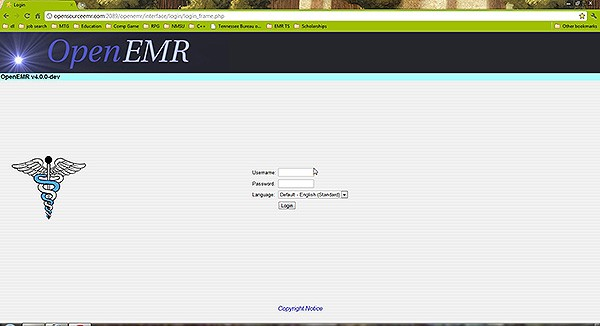
Getting Started
Getting to the Login Page
In your browser's address bar you will need to enter the location of your OpenEMR installation. For most users
this address will consist of the name of your server followed by a forward leaning slash, "openemr" and another
forward leaning slash. This should look like this:
http://MyServerName/openemr/
Be sure to check with your Administrator, as the location of your OpenEMR installation may be different. As
an example the OpenEMR live demo is located at: http://www.oemr.org/demo/openemr/
Once you have entered the correct address, you should be presented with the login screen:
Logging In
The login screen contains two input boxes: 'Username' and 'Password'. The first time you log in to a fresh
installation of OpenEMR you will need to log in as "admin" with a password of "pass". Your administrator may
provide with a your own username and password. ( Note that the OpenEMR login is case-sensitive.)
You will also be presented with a drop-down list of possible languages in which you can view OpenEMR. The
default language (English) should already be selected.
Once you have entered the correct username and password, simply click the 'Login' button or press 'Enter'.
Changing Passwords
If this is your first time logging in to OpenEMR it is recommended that you change your password to something
more secure. To do this select 'Miscellaneous - Password' from the navigation list on the left, or simply
'Password' in the Radio Button navigation scheme.
3
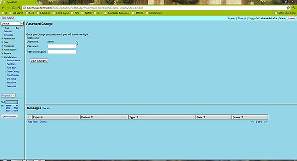
This will bring up the "Password Change" screen. Enter your new password into the two input boxes, make
sure you type the same thing into each box. And remember that OpenEMR's username and passwords are case
sensitive.
Once you've done this, click the 'Save Changes' button. You will then be required to login again with your new
password.
( Note: If you are using the OpenEMR demo instance, please do NOT change the admin password! )
4
Main Screen & Navigation
A successful login will bring you to the main screen of OpenEMR. The user is presented with two windows,
the Calendar, and below that, the Messages page.
Navigation
OpenEMR can be configured with your choice of three navigation schemes. Traditional, Tree View, or Radio
Buttons. You can specify which scheme you would like to use by editing the file openemr/interface/globals.php
( Detailed instructions can be found here. )
Traditional
The Traditional navigation scheme uses context-sensitive menus located at the top of the screen, which change
depending on what page is being viewed. The patient search function is also located at the top left corner of the
screen.
In the Traditional navigation scheme related pages are linked. Pages load simultaneously to facilitate the data
entry process.
5
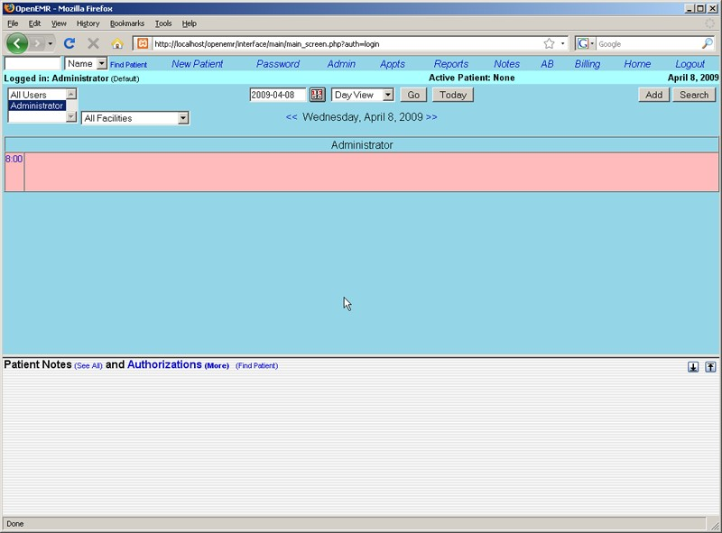
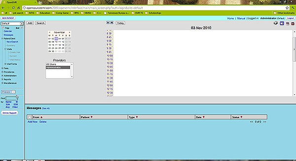
Tree View
The Tree View is the default navigation scheme for OpenEMR 3.2. This navigation scheme presents a
hierarchical list of page links on the left side of the screen which can be directed to load in either the top or
bottom widow of the main screen.
The patient search function is located below the navigation list on the left hand side of the screen. Along with a
link to OpenEMR's support page on Sourceforge.net.
6
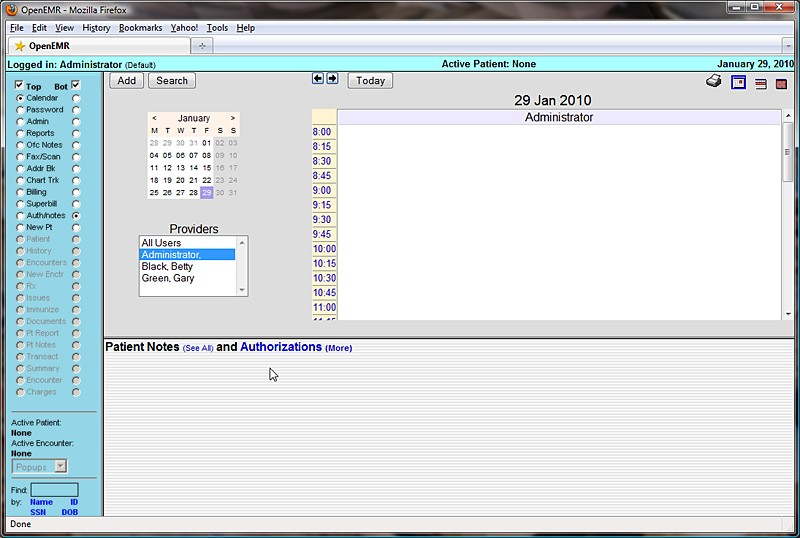
Radio Buttons
The Radio Button navigation scheme functions similar to the Tree View except that the links are presented as an
unordered list, with a series of radio buttons to the right and left of each item.
Selecting the left radio button will load the desired page in the top window, while selecting the right hand button
will load the page in the bottom window. You can also disable the top or bottom window by clicking on the
appropriate checkbox at the top of the navigation menu.
For the purpose of this Users Guide, we will assume you are using the default navigation scheme (Tree View).
A complete cross reference of menu items for both the Radio Button and the Tree View navigation schemes can
be found here.
7
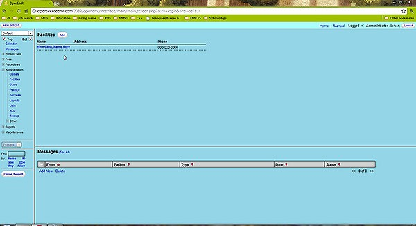
Setting Up Your Clinic
To begin using OpenEMR, navigate to your server's installation directory and log in using your assigned
username and password.
A successful login brings you to the appointment calendar. Before you begin scheduling appointments you'll
want to configure some basic information for your users. To start setting up your clinic, select 'Administration'
from the navigation list on the left of the screen. This will bring up a list of available administration pages.
Click 'Facilities' to bring up the Facility Administration page.
This is one of several pages within the Administration section of OpenEMR. Administration also includes
sections for managing your facility's Forms, Practice information, Calendar categories, Lists, Database
administration, and more. Links to these sections can be found in the left hand navigation list under
'Administration' (or at the top of the page if you're using one of the other navigation schemes).
Facility Administration
We'll start by setting up your facility for your users. There is a default clinic already built in. It will need to be
updated with the correct information for your clinic. To do this, simply click on the name of the clinic, in this
case "Your Clinic Name Here", to edit it's details.
This pops up a lightbox containing a form for editing your clinic's information.
8
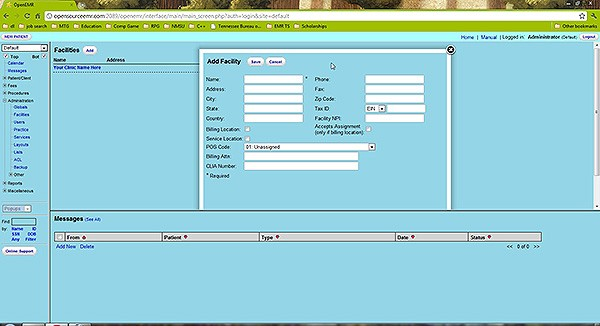
Enter the correct name, address & contact information for your clinic. This information will be used for billing,
so make sure to include who to direct billing information to, and enter your facility's NPI and CLIA number.
Indicate whether your facility is a billing and/or service location by clicking the checkbox next to the
appropriate option. If your clinic is a billing location, you may also want to check the "Accepts Assignment"
box.
When you are finished entering your clinic's information click the 'Save' button to update your clinic and return
to the Facility Administration page.
Your clinic may have additional facilities in which care is given, such as a hospital. To create a new facility,
click 'Add' and enter the relevant data as you did for the other clinic. Click 'Save' when finished.
User Administration
Clicking 'Administration - Users' in the navigation list will bring you to the User / Group Administration page.
This page contains a list of your clinic's users. If you have not yet added any users, then only "admin" will be
shown.
9
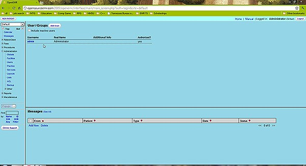
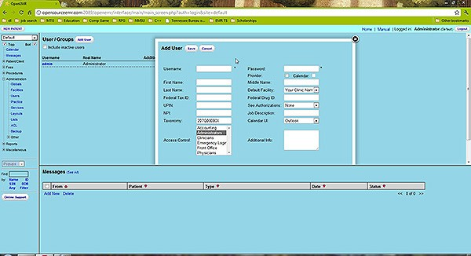
You can add a new user by clicking the 'Add User' button, or you can modify an existing user by clicking on
their username.
Both methods will pop up a lightbox containing the user profile page. Here you can edit a user's password,
facility information and access controls, as well as their authorization status. Authorized users are practitioners,
and will appear in the appointment calendar. They can also be associated with encounters for billing purposes,
and are able to authorize encounter information entered by non-authorized users so that the encounter will be
billable.
To authorize your practitioners be sure to click the 'Provider' check box. Other facility staff do not need to be
authorized. Practitioners will also need their UPIN and Federal Tax ID entered for correct billing, as well as
their Federal Drug ID for prescription writing.
Once your user's information has been updated successfully click 'Save' to return to the User / Group
Administration page.
10
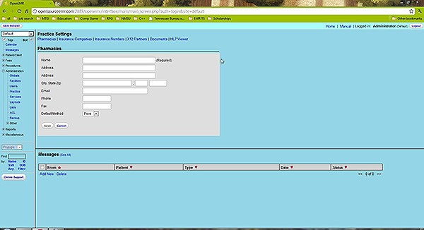
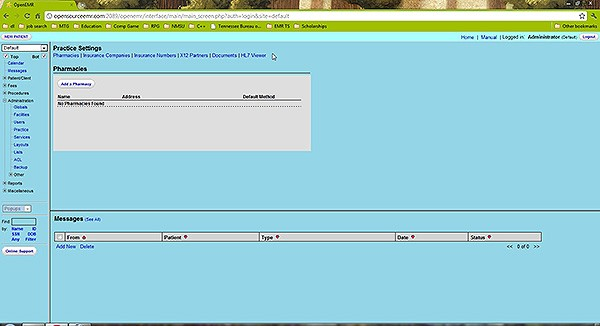
Practice Administration
Next you'll need to enter the relevant practice information for your clinic. This includes pharmacy and
insurance company information, as well as the types of documents your clinic accepts.
Clicking the 'Practice' link in the navigation menu will bring you to the Practice Administration page where you
will be presented with a list of links for editing your facilities' information.
The Practice Administration page initially presents you with the list of your clinics pharmacies. Click the 'Add
a Pharmacy' button to enter the contact information for your clinic's pharmacy. A drop down menu lets you
select the preferred method for transferring prescription information. Once you've entered the correct
information, click 'Save' to add your new pharmacy.
Before setting up any insurance companies, you'll want to enter your X12 Partner information. These are the
clearinghouses or large payers to whom you will send electronic billing. Most practices will probably just use a
single clearinghouse.
11
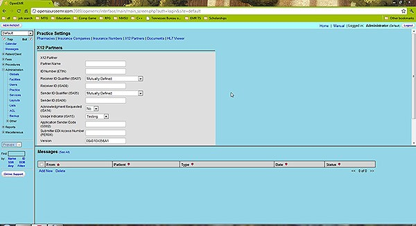

To add one of these clearinghouses, click on 'X12 Partners' and then click the 'Add New Partner' button.
The ID numbers that you enter here will need to be provided to you by the clearinghouse/partner. The Version
number refers to the version of the X12 837p protocol specification used and should probably not be changed.
Click 'Save' to save the information you've entered.
Selecting 'Insurance Companies' from the links at the top of the page brings up a list of Companies that have
been added to your clinic. If this is a new installation of OpenEMR, this list will be empty. You can add a new
insurance company by clicking 'Add a Company'. Or, you can edit an existing company by clicking on it's
name in the list.
Once you have entered the correct information, click 'Save' to save any changes, or add the new company to the
list.
12
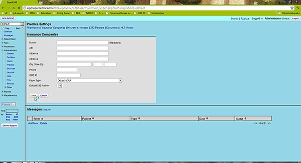
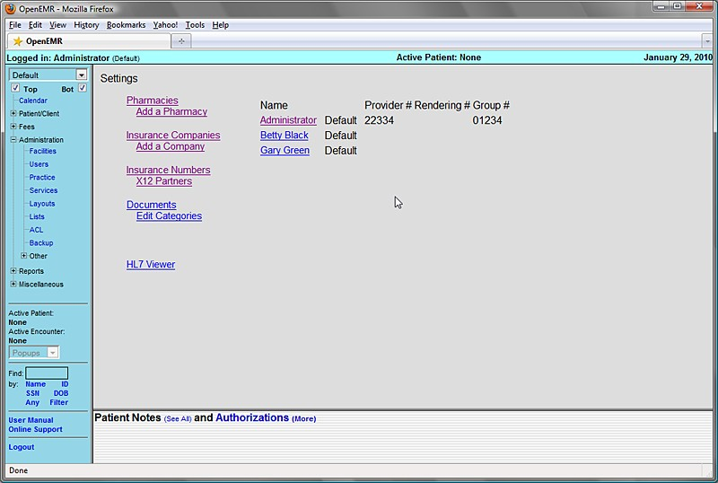
In practice, many insurance companies have multiple insurance plans with a separate billing address for each
plan. At this time, you will need to add each plan as a separate insurance company.
Many insurance companies also assign their own doctor-specific ID numbers, and these numbers must appear in
your claims. Click on 'Insurance Numbers' to see a list of your clinic's providers and their default ID numbers.
Click on a provider's name to bring up a list of insurance companies and the corresponding ID numbers that
have been entered for that provider.
13
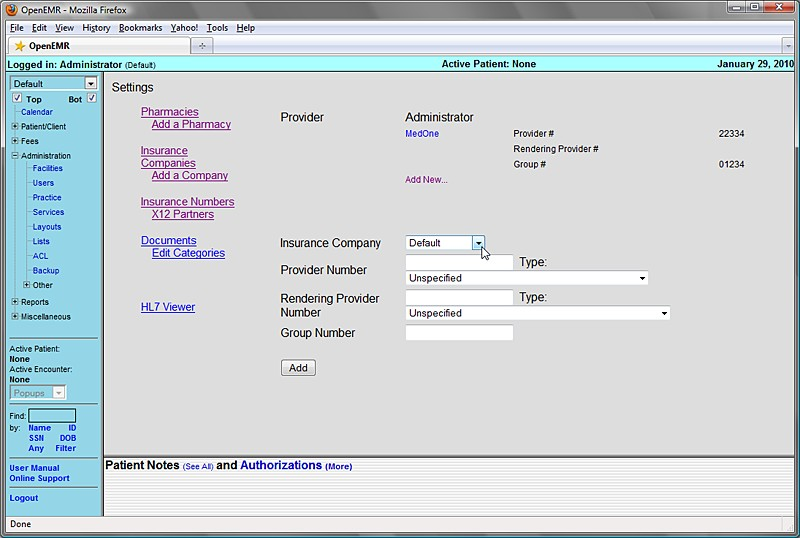
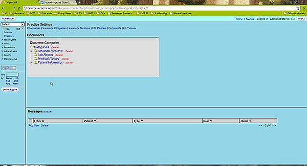
Selecting 'Add New...' presents a form for adding this provider's numbers for another insurance company. Fill in
this information and click the 'Save' button to add the new number. You can also edit an existing set of numbers
by clicking on the company name in the list.
Note that one of the selections in the drop down list of insurance companies is "Default"; you can use this to fill
in default numbers for insurance companies not otherwise entered.
Next click on 'Documents' to see a list of patient documents that have been uploaded. Clicking the 'Edit
Categories' button displays a hierarchy of the different types of documents that you can attach to a patient. The
default set is shown. To add more categories click on the desired parent folder's name, fill in the name of the
new document type, and click 'Add Category'.
14
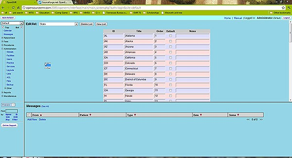
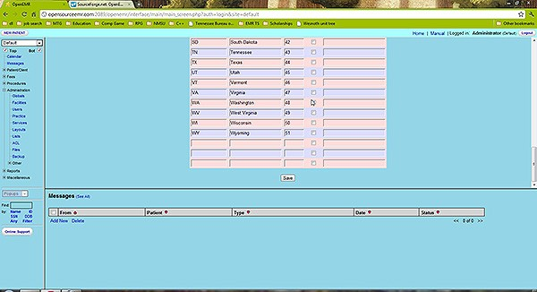
Lists
Select 'Lists' from the menu at left. This brings you to OpenEMR's List Management system. This is where
many of the selection lists within OpenEMR are stored and edited. Before you begin using OpenEMR you will
need to populate these lists with data appropriate to your clinic.
Select 'State' from the drop-down list. OpenEMR comes configured with only one state by default. If your
clinic sees patients from only one state you can simply replace the default state by clicking in the 'ID' and 'Title'
fields and replacing them with the appropriate information.
Alternatively, you can add multiple states by filling in the empty fields that are provided for you. You can also
specify which state you would like to use as the default by selecting the checkbox next to that state.
When you are finished modifying the list, click 'Save'. This will update the list and generates a new set of
empty fields should you need to add additional states to the list.
15
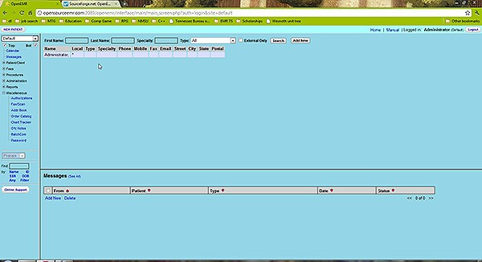
The drop-down contains lists for Race/Ethnicity, common billing codes that appear in the Fee Sheet, Price
Levels, common Exams/Tests, etc. All of these lists may be modified in this same manner.
Address Book
OpenEMR also contains a built-in address book for storing useful contact information for your staff as well as
other doctors, clinics, etc. that your office may contact on a regular basis.
Select 'Addr Bk' (under 'Miscellaneous') from the navigation menu to bring up your clinic's Address Book.
This will present you with a list of all of the contacts currently contained in your Address Book. Click on a
person's name to edit their contact information, or click 'Add New' to enter a new contact into your address
book.
In the 'Add New Person' dialog box, select a title, and enter their name and address. If you are adding a
16
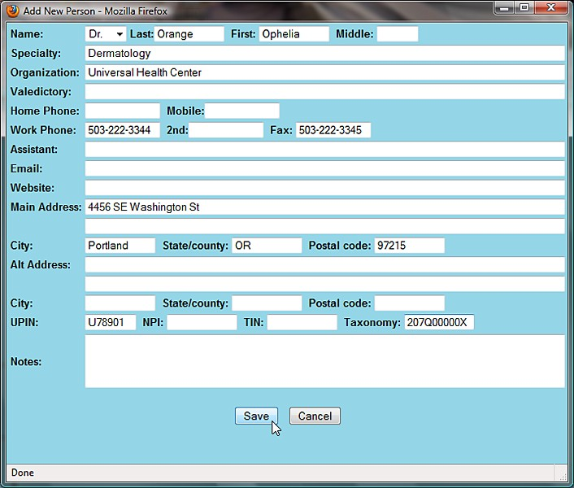
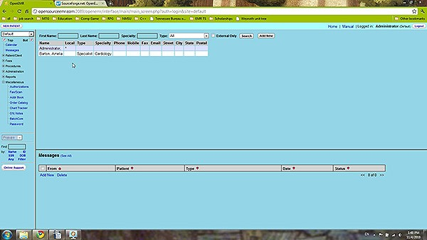
physician to your address book, be sure to include their UPIN and other ID numbers for billing and referrals.
Entering a 'Specialty' will allow you to narrow your search parameters when writing letters to a particular
physician, etc.
When you are finished entering the new contact information, click 'Save'.
Note that the new contact has been added to the list.
You can search for a particular contact in the address book by entering their name and/or specialty at the top of
the page and clicking 'Search'. This brings up a list of any contacts matching your search parameters.
17
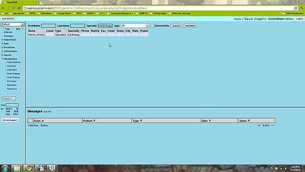
18
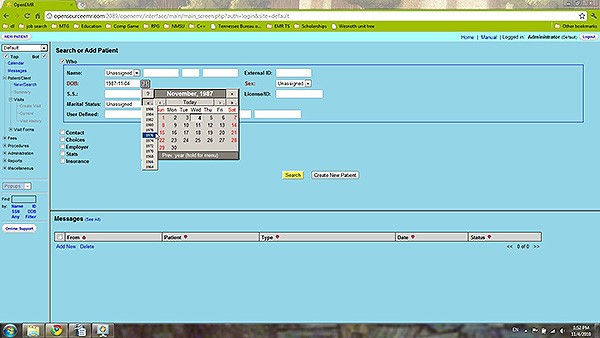
Adding A New Patient
Once you have entered all the necessary clinic information you can begin entering patient data.
Select 'Patient/Client – New/Search' in the navigation menu on the left of the screen to begin entering a new
patient into the system.
Patient Demographics
In the Search or Add Patient page enter the patient's name & birth date. If you have an existing chart for this
patient, you may enter the chart number under 'External ID'. If you do not enter a number the system will
automatically assign one that is equal to its internal patient ID. When you are finished click 'Create New
Patient'.
NOTE: Clicking the calendar button next to the "DOB" field will pop up an easy to use date selection tool
found throughout the OpenEMR program. Simply click the arrows to the right or left of "Today" to advance the
date forward or back a single month or year, or hold an arrow down to select the month or year manually.
Selecting the day of the month will then fill the selected date into it's respective field in the proper format
(YYYY-MM-DD)
You should now be presented with the Patient Summary Page, which contains a summary of the patient's
identifying information, including employment, insurance and provider information in sections that may be
expanded or collapsed at will by clicking the link to the right of the desired section. The page also includes
links to the patient's medical history, documents, etc. at the top of the screen, as well as a list of "issues"
associated with that patient, and any appointments they may have scheduled.
Notice that additional patient related pages are now accessible via the navigation menu to the left.
19
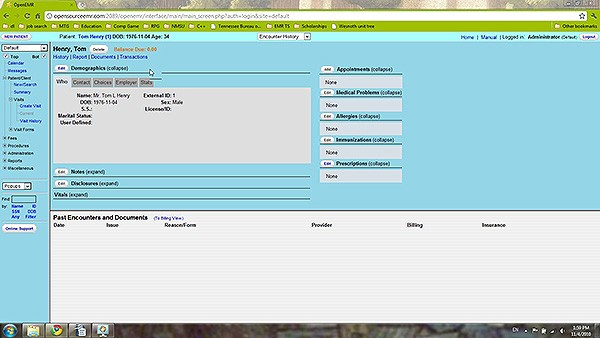
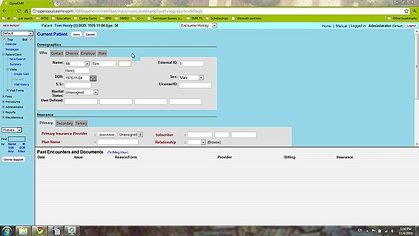
To continue entering patient information click 'Edit' next to the desired section.
This will bring up a series of tabs containing inputs for the various types of patient data. Click on the tab for the
section you would like to work with and fill in the desired fields. Note that fields labeled in red are required in
order for billing to work properly.
To enter a patient's insurance information for the first time click 'edit' next to the Demographics section. The
Insurance information section can be found below the Demographics tabs.
20
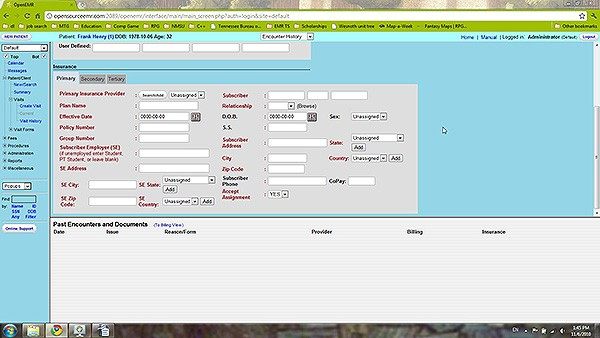
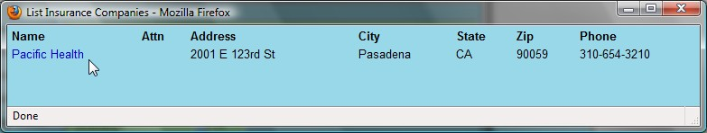
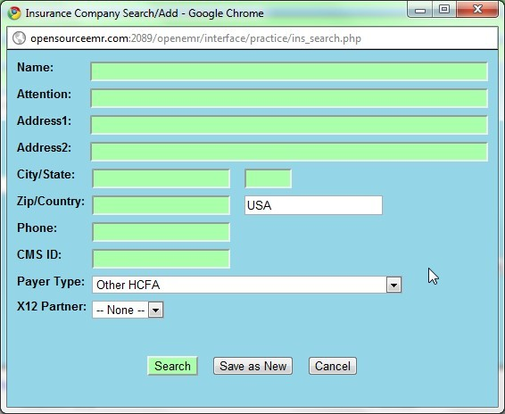
Select the patient's insurance company from the drop-down list, or you can search for it by clicking
'Search/Add'. Doing so brings up a dialog box containing several fields which are searchable (labeled in green).
Entering a partial value into one or more fields and clicking the 'Search' button pops up a second dialog
containing a list of all insurance companies matching those parameters.
Selecting the desired name from the list will automatically make it the selection for that patient.
21
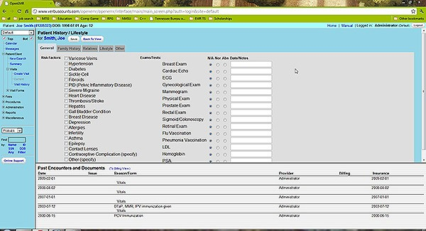
If the desired insurance company is not yet entered, you can also add it here by completing all the fields and
clicking 'Save as New'. This also selects the newly added insurance company for this patient.
If the patient is the also the insured party, then selecting "self" from the drop-down list will automatically
populate the "subscriber" section with the relevant data for you.
When you are finished, click 'Save' at the top of the page to save and return to the Demographics summary. You
can see that Insurance now has it's own section, and all of the new patient data is now visible on the summary
page.
Patient History
Next select 'History' at the top of the Patient Summary page This brings up a page containing information about
the patient's medical history.
Clicking 'Edit' will bring up a data entry page with tabbed sections, similar to that of the Demographics page.
Access the desired sections by clicking on the appropriate tab and enter in the patient's data as necessary, then
click 'Save'.
22
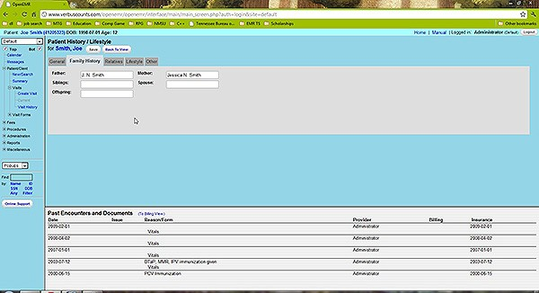
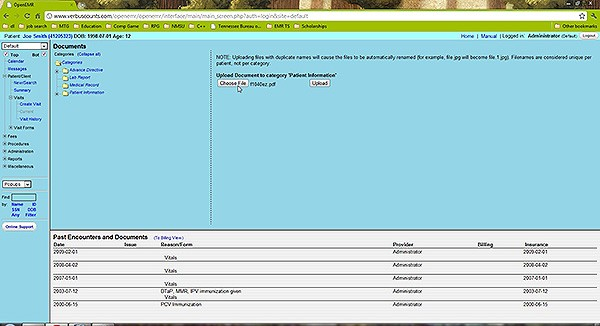
Uploading Documents
Select 'Documents' at the top of the patient Summary page. Here you may upload files that you have scanned
and/or saved, such as a patient's ID or insurance card.
First, click the appropriate Document Category for the file you wish to upload, then click 'Browse'. This will
present you with the standard dialog for locating the file on your computer. Once the desired file has been
selected, click 'Upload' to save the file in OpenEMR.
Once the file is uploaded, you will be presented with a report, confirming the file has been uploaded
successfully. To see the new file, click on the plus sign next to the appropriate document category which
displays a list of all the files in that category. Click on the name of the new file to view it.
23
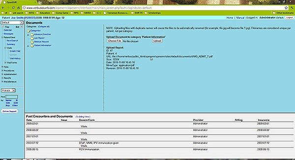
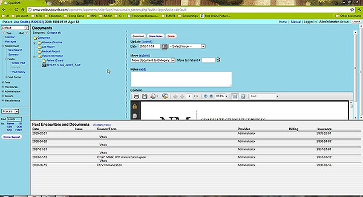
Here you can also attach a note to the document, associate it with a particular issue, or move it to a different
category or patient.
24
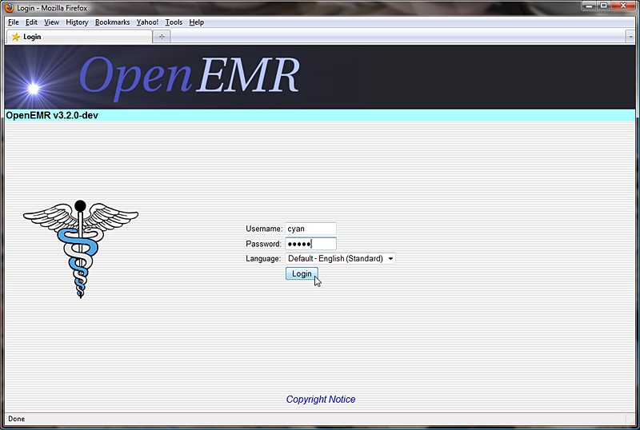
Using The Calendar
In this section we'll discuss setting up a provider's schedule in the calendar and adding patient appointments.
Setting Up Schedules
Login to OpenEMR using your assigned username and password.
For users who are not practitioners, such as someone who works at the front desk, the Calendar will show the
schedules of all the practitioners at the clinic by default. When you first start using OpenEMR you will need to
set up schedules for all of your practitioners.
To do this, select from the 'Providers' list on the right the person who's schedule you wish to set up. Next click
the time at which that provider is scheduled to enter the office.
25
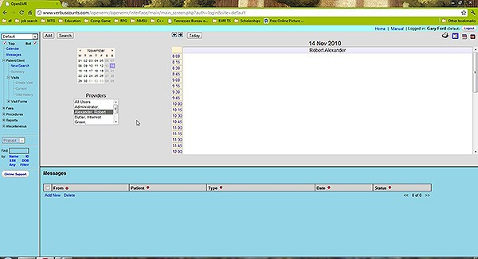
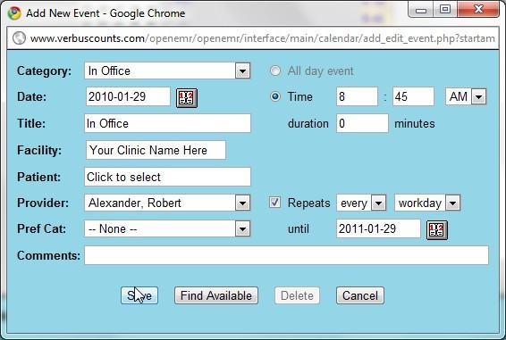
This will present you with the 'Add New Event' dialog box.
The clinic and provider name should be automatically filled in for you, as well as the time that you selected.
Choose "In Office" from the 'Category' drop-down list.
You can also choose to make this a repeating event, which allows you to set up an event only once for a given
period of time. Do this by selecting the 'Repeats' checkbox, and setting the appropriate frequency & duration.
When you are finished click 'Save' to update the calendar. Now you will see a block of available time slots for
that provider's schedule. Scroll down and click on the time that the provider is scheduled to leave the office for
the day.
The same process is used to create a repeating "Out Of Office" event.
26
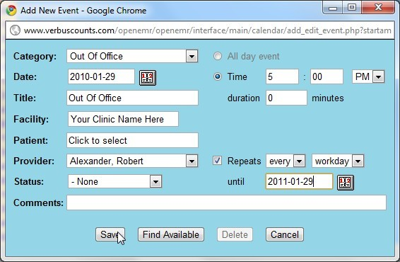
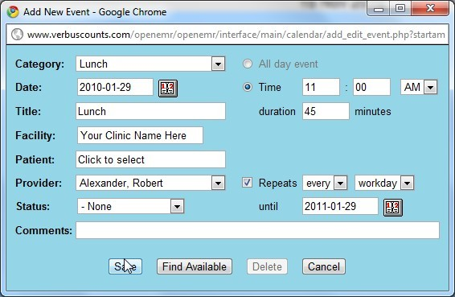
You can also add a lunch break in your practitioners' schedules. This is done the same way, with the exception
of the duration, which in this case is non-zero.
Now you can see your practitioner's full schedule laid out on the Calendar page. Continue setting up the
Calendar in this fashion until all your practitioners' schedules have been entered.
27
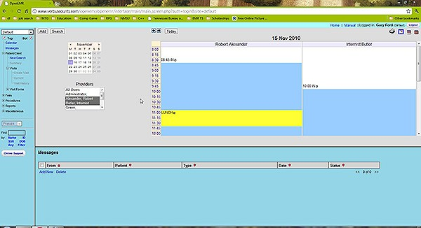
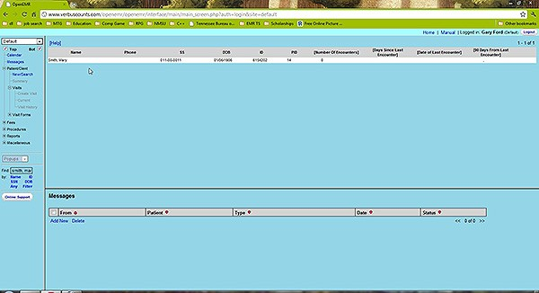
Making Appointments
Now that the clinic and all it's practitioners are set up, you can begin scheduling appointments for your patients.
To locate a patient in the system, enter all or part of their name into the search field in the bottom left corner of
the screen (below the navigation list) and click 'Name'. This will bring up a list of all the patients in your
system matching that name. If you need to narrow the list, you can enter a longer search term, such as their full
name (Eg. "rourk, rod").
Click on the desired name to bring up the Demographics summary for that patient. If you have the patient on
the phone, now would be a good time to confirm that their contact and insurance information is up to date. If
the patient is not already in the system, you can select 'New/Search' from the menu to begin entering their
information.
28
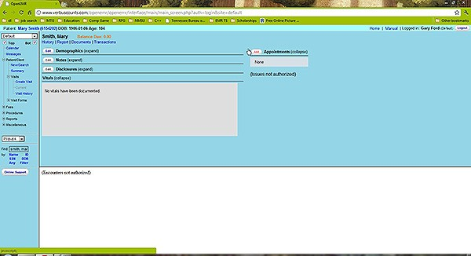
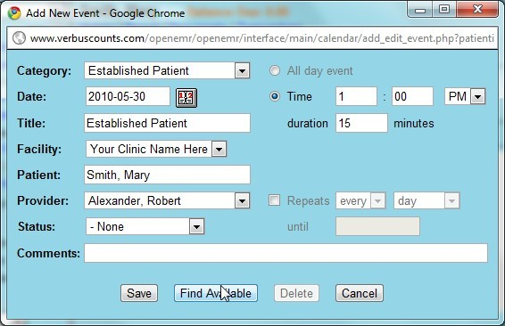
The right-hand side of the Patient Summary shows a list of all current and future appointments for that patient.
Click 'expand' next to the Appointments section if the list is not already visible. Click 'Add' to schedule an
office visit.
This will present you with the same 'Add New Event' dialog used earlier. This time "Established Patient" is
selected as the Category. You can change the category to "New Patient" if this is their first visit. If a primary
provider has been entered for that patient, they will be selected automatically.
Click 'Find Available' to see a list of appointment times available for that provider for the next 7 days. You can
change the start date or the number of days shown and click 'Search' to display a new list using those
parameters.
29
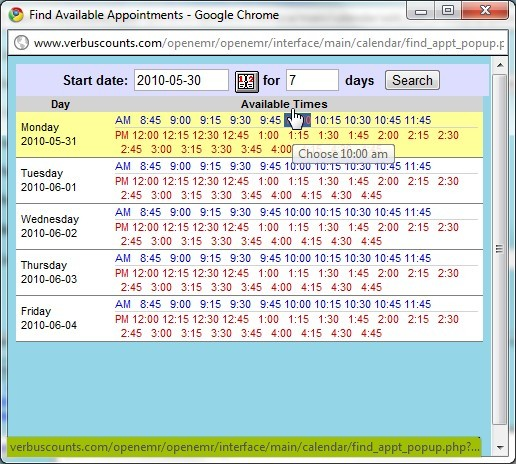
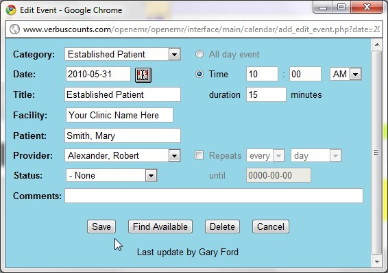
Once a date and time have been agreed upon, selecting that time from the list will close the window, and the
selected time will appear in the 'Add Event' dialog.
Make sure to enter the correct duration for the appointment and click 'Save'.
Return to the calendar using the navigation menu on the left. Advancing to the appropriate date, using the
arrows at the top of the screen, shows the new appointment listed in the provider's schedule. Mousing over the
patient's name displays a toot-tip with information about that patient, such as date of birth.
30
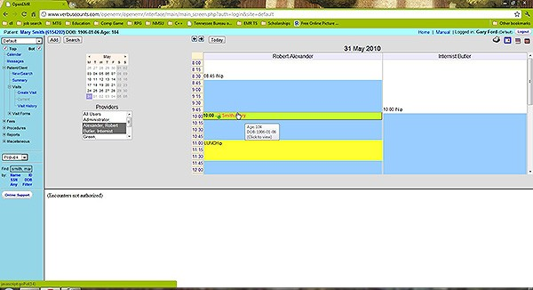
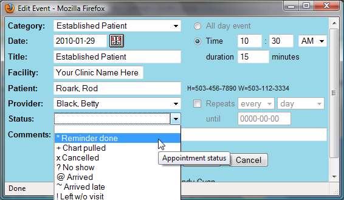
Appointment Status
OpenEMR's calendar system includes a status indicator, allowing doctors and staff to see at a glance what is
going on with all appointments and the corresponding encounters for the day.
To change the status of a given appointment, double-click on the appointment block. This brings up the 'Edit
Event' window. Choose the correct appointment status from the drop-down list. Notice each status has a unique
symbol associated with it.
You can also type a note into the 'Comments' line if more information is needed. Click 'Save' to update the
status of the appointment.
31
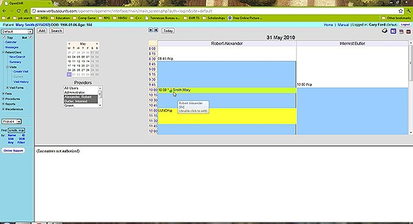
You can see that the symbol next to the appointment time has changed to indicate it's new status. Any
comments are now also visible when mousing over the patient's name on the appointment calendar.
32
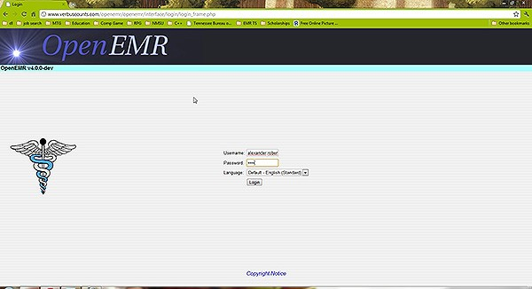
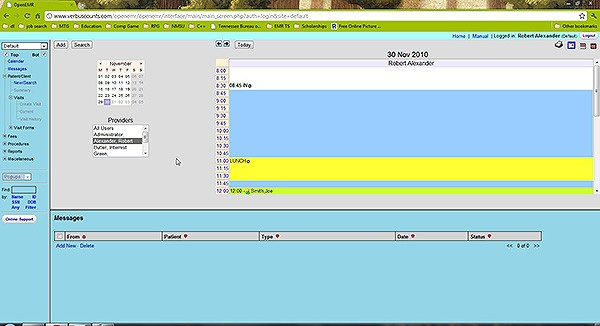
Encounters & Coding
Patient encounters are handled primarily by a clinic's providers.
Logging in as a provider presents you with the Calendar page showing only that provider's schedule by default.
To view another provider's schedule, select the desired user from the list to the left of the calendar.
The bottom window also shows any notes left for that provider about their patients.
The Calendar shows the appointments scheduled for that day. Providers can see the status of any given
appointment, indicated by the symbol shown between the appointment time and the patient's name. The "@"
symbol, for example, indicates that the patient has arrived at the clinic and is ready to begin their appointment.
33
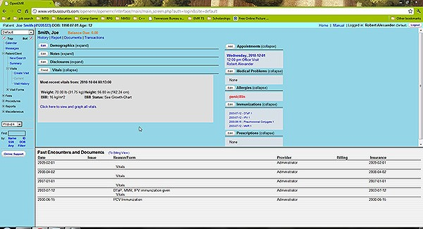
Opening a New Encounter
To begin the encounter, click on the patients name in the Appointment Calendar. This brings you to the patient's
Summary page, as well as the Past Encounters & Documents page which lists any previous encounters or files
that were uploaded for that patient.
Select ' History' at the top of the page to view a summary of the patients Medical History and Lifestyle
information. Click 'Edit' to enter any information that may be incomplete.
The Patient Encounters & Documents page at the bottom of the screen displays a list of all encounters that have
been entered for this patient. For new patients, there may be no encounters listed.
34
By default, OpenEMR is set to generate an empty Encounter when a patient's status has been set to "Arrived
(@)". To open this encounter and begin entering data, click on the new entry in the Encounters list, then click
'Edit' next to the provider's name.
If your clinic's version of OpenEMR is configured differently, you can begin a New Encounter manually by
selecting 'Create Visit' from the navigation list on the left. Both methods will bring you to the New Encounter
Form.
Here you can enter a brief description of the encounter and the date of service. Encounters for new patients will
not have any Issues or Diagnoses associated with them at this time, so click 'Save' to continue with the
encounter.
35
Encounter Forms
This will bring you back to the summary page for This Encounter. Displayed is a list of all the forms associated
with this encounter. You may click 'Edit' next to any of these forms to edit its contents.
To the right is a drop-down list of forms that can be added to the encounter. OpenEMR comes configured with
several common encounter forms by default, but your clinic may have their own customized encounter forms as
well.
Select 'SOAP' from the drop-down list to add it to the encounter.
The SOAP form will contain a subjective & objective record of the patient’s vital information, as well as any
notes on the assessment of the patient's health and suggested treatment plans.
Enter the appropriate information and click 'Save Form' to return to the Encounter summary page.
36
You'll see that the SOAP form has been added to the list of forms for this encounter. Also shown is a summary
of its contents.
Using the Fee Sheet
Next select the 'Fee Sheet' from the drop-down list. The Fee Sheet is different from most other forms in that it
enters and modifies billing information that is stored elsewhere in the system; it is not really an encounter form,
and when used it will not appear in the encounter's list of forms.
The Fee Sheet includes several drop-down lists of the most commonly used billing codes. It can and should be
customized so that it's most suitably adapted to your practice;
Included is a search feature, where you can search for and select from the thousands of billing codes in the
database. And below that is a list of all the billing codes, along with their charges and other related information,
that have been selected for this encounter.
37
For example, selecting 'Detailed' from the "New Patient" drop-down adds the associated CPT code to the list.
Look for an appropriate billing code by entering a search term in the box to the left of the 'Search' button. Make
sure the correct code type is selected and click 'Search'.
A drop-down list will then be populated with any billing codes that match your search parameters. Selecting the
desired code from the list will add it to the list of codes for this encounter.
The Fee Sheet also allows you to justify the selected codes for billing purposes. Justification is the association
of ICD9 codes with procedure codes. Insurance companies require this for billing, in order to "justify" paying
for procedures.
To do this, click the drop-down menu under 'Justify' for the desired CPT code. Select the appropriate ICD9
code from the list and click 'Save'.
38
To see the Feet Sheet has been associated with this encounter, click 'Visit History' in the navigation menu to go
to the list of encounters for this patient. You can see that the CPT & ICD9 codes are listed next to the new
encounter, as well as the SOAP form that was added earlier.
Adding Prescriptions
To prescribe medication for this patient click 'Edit' next to the Prescriptions section in the Patient Summary
window, and click 'Add'.
39
This presents you with a form for entering prescription data, including dosage, refills, and whether or not
generic over-the-counter substitutions are allowed for this patient.
The Prescription form includes a search function for looking up a particular type of medication. Selecting
'(click here to search)' next to the Drug field will bring up a new field into which a search term may be entered.
Clicking 'Search' displays a drop-down list of possible medications generated by connecting to the web site
www.rxlist.com.
Selecting the desired medication will fill in the Drug field for you. Also, clicking 'Yes' next to "Add to
Medication List" will allow the prescription to be included in the Issues list as a Medication.
40
Enter the correct data to complete the form and click 'Save'. You are then presented with a form for generating a
PDF of the prescription information. It may be printed or sent by email or fax. "Auto Send" will use whichever
default method was selected when you set up the pharmacy.
Clicking 'Print (PDF)' will generate the following PDF document to be saved or printed as necessary. The
default template for this form may also be customized to your clinic's own specifications.
41
42
Issues & Immunizations
Adding Issues
An "issue" is a medical problem, allergy, medication, surgery or dental issue. These issues are related in that
they can all be associated with multiple encounters.
This is especially useful with medical problems, where the user may want to quickly determine which
encounters treated a particular problem, or which problems were treated by a particular encounter.
The Issues list can be found on the right-hand side of the Patient Summary page.
You can see that the prescription added earlier has been listed in the Medications section. Clicking 'Edit' next to
one of these sections will present you with a complete list of all issues for this patient. Click 'Add Issue' to add
a new medical issue you want to kept track of for this patient.
43
This pops up the 'Add Issue' dialog box.
The default issue type is set to 'Problem'. For each issue type there is a list of commonly selected titles which
are customizable for your clinic's specific needs. If the desired title is not included, it can be typed into the text
box below the list.
Enter the appropriate beginning and end dates, and select the 'Occurrence' from the drop-down list provided.
Clicking in the 'Diagnosis' field will present a search dialog for locating the correct ICD9 code for this issue.
Enter the appropriate search term and click 'Search' to bring up a list of possible ICD9 codes. Selecting the
desired code will close the search window and enter the selected code in the text field.
44
Complete the remainder of the form as necessary and click 'Save'.
Additional issues are entered in the same manner; clicking 'Add Issue' and selecting the appropriate type, such
as 'Allergy'. Notice that the 'Add New Issue' dialog also uses the OpenEMR date selection tool described
earlier.
45
Once the new issues have been added successfully you should see an updated list of all the issues that have been
entered for this patient. You may click on an issue in the list at any time to edit it.
Associating Issues with Encounters
The far right column in the Issues list represents the number of encounters associated with a given issue. Click
on the '0' next to a newly added issue to bring up the 'Issues & Encounters' dialog.
46
This dialog contains a list of all the issues and encounters associated with this patient. It is used to set (and
view) the relationships between issues and encounters. Note that the issue that was just clicked on has been
highlighted.
Select the appropriate encounter from the list on the right to highlight it. Clicking 'Save' now links the selected
issue to the selected encounter.
Continue associating issues with encounters as necessary. Refreshing the Issues list shows the current
information for all issues.
47
Immunizations
Click 'Back' to return to the Patient Summary page. Now click 'Edit' next to the Immunizations section. This
page contains a form for entering information on the any immunizations the patient has received.
Select the type of immunization from the drop-down list provided, and enter any data you may have, including
the date of the shot, and the name of the provider who administered it.
Click 'Save Immunization'. The newly added immunization now appears in the list at the bottom of the screen.
48
Return to the Summary page via the navigation menu on the left. Notice that the lower left portion of the
patient summary now shows an updated list of all active issues, immunizations and prescriptions.
49
Patient Notes & Transactions
Patient notes store patient information that is unrelated to the patient's medical condition. Such information may
include outstanding balances, changing insurance information or patient requests for actions by the clinic.
Transactions are somewhat similar, but record events that have already occurred. These may be referrals,
requests from either the patient or the doctor, or legal transactions.
Patient Notes
To begin, log in to OpenEMR, and use the search function in the lower left-hand corner to locate the patient for
which you would like to add a note.
Click on the desired patient to bring up the Patient Summary page.
50
If the user is not Authorized they will be unable to see the patient's medical details such as issues,
immunizations and prescriptions.
Click 'Edit' next to the Notes section to bring up the Patient Notes page, then click 'Add'.
This will pop up a lightbox with a text field for entering the note, as well as drop-down lists for selecting the
type of note, and the person to whom the note is addressed.
Type your note in the text box and click 'Save as new note'.
The new note now appears in the list on the Patient Notes page. The checkbox is used to control whether the
note is "active". Above are options to view only the active or inactive notes.
Click 'View Patient' to return to the patient summary.
The new note is now listed on the Summary page.
51
Transactions
Select 'Transactions' at the top of the Patient Summary to go to the Transactions page.
The Transactions page contains two basic form types. A simple form for internal transactions such as patient
requests or billing transactions, and a Referral form.
Referrals
Click 'Add' and select 'Referral' from the drop-down list to begin a new Referral transaction.
Another drop-down contains a list of physicians and clinics from the Address Book to which you can refer your
patient. Select the referring physician, risk level, etc., and enter a reason for the referral.
52
Click 'Save'.
The referral is now in the Patient Transactions list.
Click 'Print' next to the transaction to generate a printable version of the Referral form.
Depending on your system's configuration, you may be asked to save the file, or it may be printed
automatically.
53
When you are finished return to the Transaction list and click 'Add'.
Basic Transactions
Other transaction types use the simple transaction form. Select the desired type from the list and enter the
transaction details in the text box provided. Click 'Save' when finished.
The new transaction has now been added to the list along with the referral. Click 'Edit' next to a transaction to
edit its contents.
54
Basic Billing
Only the Administrator, authorized users, and those with Access Control designated as 'Accounting' in their user
profile can access OpenEMR's Billing system.
To begin, log in with your designated username and password.
Select 'Fees - Billing' from the navigation menu on the left. This brings you to the main Billing screen. This
55
will present you with options to generate a variety of printable and electronic claims and reports.
Billing Reports
The Billing Report page will automatically display any billable encounters that were generated today. To view
billables from a different time period enter the 'From' and 'To' dates using the date selection tool, and click
'Update List' in the top right corner of the screen.
The list should now display all billables from the selected date range.
56

Generating Claims
Clicking the checkbox to the right of the desired encounter will enable a set of buttons for generating claims.
Your system should be configured with the appropriate set of forms for the insurance companies and
clearinghouses used by your clinic.
Click 'Generate X12' to create a claim file that is suitable for sending to the clearinghouse.
57
OpenEMR will present you with a confirmation popup, reminding you to check the log file after you have
finished generating your claims.
Click 'OK' to proceed.
The standard Save File dialog should appear, allowing you to save the generated batch file to your computer.
Once the file has been saved, click 'View Log' to check whether the claims were generated successfully.
58
If there were any errors in the claim generation process, they will be displayed here. Otherwise you will see a
note indicating that the file was generated successfully.
The downloaded claim file should contain the necessary encounter information, formatted for billing. This is
what will be sent to the clearinghouse, by whatever method has been specified.
Uncheck 'Show Unbilled Only' and click 'Update List' to refresh the billing list and see the updated status of the
encounter.
59
Click 'Mark as Cleared' to indicate that billing has been completed for this encounter.
You will then be presented with a screen indicating that the claim has been "marked as billed only."
Click 'Back' to return to the Billing Report page.
60
Generating HCFA Forms
In OpenEMR multiple forms may be generated for each claim.
For example, re-enter the desired date range, uncheck 'Show Unbilled Only' and click 'Update List' again to
show the current status of the claim. You can see that the claim has been "Marked as cleared."
Check the box to the right of the encounter and click 'Generate CMS 1500'.
OpenEMR will now generate a PDF of the HCFA claim, based on the standard HCFA form template. The new
form can be viewed using a PDF viewer, or printed automatically on a pre-printed HCFA 1500 form, depending
on your system's configuration.
61
Returning to the Billing Report and clicking 'Update List', you can see that the status of the billable encounter
has been updated.
62
63
Accounting & Receivables
Users classified as Accounting or Administrator are also authorized to enter receivables for the clinic. Checks
received from insurance companies can be entered here and distributed to cover the appropriate encounters.
Patients can also be billed, and their payments recorded.
Explanation of Benefits
To begin, select 'Fees - Billing' from the navigation menu and click 'EOBs' to bring up the Explanation of
Benefits Search window. This is where you can upload an ERA file (click 'Help' in the upper right-hand corner
for more information) or begin inputting payments manually.
At the top you may enter a source ( Eg. check number ), pay date and check amount. The amount field will be
automatically decremented as payments are entered into the associated invoices. When all invoices have been
completed this value should be zero.
64
The search fields, with the blue background, are for locating a specific invoice (or invoices). Enter the
appropriate parameters, such as the date of service, and click 'Search' to bring up a list of all invoices (claims)
matching the requested parameters.
The list shows the patient and invoice number, as well as the current balance to be paid. The number with a '-'
in the 'Prv' column indicates the number of insurance companies for which this invoice is awaiting payment.
Entering Payments
Clicking the invoice number you wish to work with opens the EOB Invoice window. Notice that the source and
pay date from the previous window have been copied over; this saves time in the common case where a single
check from the insurance company pays for multiple claims.
65

The EOB Invoice page contains a detailed list of payments made on this invoice so far. Enter the payment
amount next to the remaining balance, and check 'Needs secondary billing'. This will allow the claim to be re-
billed to the secondary insurance. Select 'Done with Ins1' above to indicate that the primary insurance EOB has
been posted. When you are finished, click 'Save'.
Once payment has been billed and received from secondary insurance, it can be entered in the same way. Enter
the source and pay date, etc. and locate the appropriate invoice(s) using the search function.
Payment amounts are now shown along with the remaining balance. The number in the 'Prv' column has also
decreased. Select the invoice number to bring up the EOB Invoice window again.
66
Enter the payment amount and select 'Ins2' to indicate that the secondary insurance EOB has been posted.
Invoice adjustments may also be made here. Enter the adjustment amount (or click 'W' to waive the entire
remaining balance), and select a reason for the adjustment from the drop-down list provided. Click 'Save' when
finished.
Patient Invoices and Payments
Once payments from the insurance companies have been received and entered, you can use OpenEMR's EOB
page to generate invoices for billing patients the remaining amounts.
Select 'Due Pt' from the drop-down list and click 'Search' to display a list of all invoices that are awaiting
payment from patients. Invoices still awaiting payments from insurance companies will not be shown.
67
Check the box next to the desired invoice and click 'Print Selected Statements' to generate an invoice for that
patient using a customizable template. Depending on your clinic's OpenEMR configuration, the invoice may be
printed automatically.
A '1' in the 'Prv' column now indicates that the patient has been billed once for this claim. This number will
increment every time a new invoice is printed for this encounter. This is useful when printing so that second
and later notices may be worded differently from the initial statement.
You can also click on the patient's name in the invoice list to create a billing note for that patient. Enter your
note into the text field and click 'Save'.
Once payment has been received, it can be entered into the invoice in the same manner as the insurance
payments. In the 'Now posting for' list be sure to select 'Patient'. Enter the payment amount as before and click
'Save'.
68
69
Reporting
Within OpenEMR there are a wide array of reports you can generate which may be useful for your practice.
These include general reports such as appointment and encounter reports, billing reports, and patient specific
reporting.
General Reports
Most general reporting tools can be found by selecting 'Reports' from the navigation menu at left. In the Tree
View scheme, the list of available reports is divided into a hierarchical list within the navigation menu.
Examples of Commonly Used Reports
Clicking 'Reports – Visits – Superbill' brings up the Superbill Report page. This presents you with a dialog for
selecting a date range.
70
Clicking 'Submit' produces a report for each encounter in the date range, and shows patient demographics and
insurance information
As well as the billing codes and amounts.
71
The Appointments Report ('Reports – Visits – Appointments') gives you a list of appointments for a given
provider, or for all providers, in a specified date range. It can be sorted by clicking on any of the four column
headings.
The Appointments and Encounters Report ( 'Reports – Visits – Appt-Enc' )gives you a useful cross-reference of
appointments with their corresponding encounters. This allows you to easily spot many types of errors, such as
appointments with missing encounters, encounters with missing appointments, missing charges, and
authorizations or justifications that are required but not done.
72
The Insurance Distribution report (listed under 'Reports – Insurance) shows you how many patients seen over a
given time period use each kind of insurance.
The Indigent Patients report lists all encounters for patients that were seen without insurance. (None shown
here.)
73
Billing Reports
From the main Billing page click 'Reports', or select 'Reports – Financial – Cash Rec' from the navigation menu.
This is the Cash Receipts report. It breaks down gross income by provider for a given time period.
74
The user can also elect to see a detailed breakdown of cash receipts, itemizing each procedure for which a
charge was made.
Patient Reports
When a patient is active within the system, the user has the option of generating a report for that specific
patient. To do so, click on 'Report' at the top of the Patient Summary page.
The user can choose to include or omit a wide variety of patient information. When satisfied with your
selections, click 'Generate Report'.
75
This produces a report including all the specified patient information.
76
77